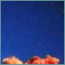

|
||||||||||||||||||||||
The Exuma Cays are part of one of the most biologically diverse regions on the planet. When Columbus first landed here he wrote, "all is most beautiful, and filled with trees of a thousand kinds . . . some are flowering, some bearing fruit . . . and there are hundreds of birds which I have never before encountered . . .". The Bahamas boasts over 1370 species of trees and plants, 221 of which are endemic. The red, white and black mangrove grows its tangled roots directly into the saltwater, preventing the islands' erosion and providing ideal cover for small marine life. Sugar cane and tamarind, used as a flavour in many local dishes, grow wildly and the beautiful but rare lignum vitae, with its beautiful purple hardwood and clusters of dark blue bloom, can be found on the larger islands. Exotic seagrape, breadfruit, pineapple and mango trees are widespread throughout the Exumas, while the fruit of the banana tree and coconut palm have become synonymous with the tropics, their fruit forming a staple of the Bahamian diet. The islands are a riot of colour and fragrance twelve months of the year with a variety of flowers always in bloom. The Exumas host an abundance of flowering trees, many of which were introduced to the islands from abroad hundreds of years ago. The pride of India becomes a cloud of lavender when in flower; the orange-blossomed croton, the blue-flowered mahoe (an endemic hibiscus) and the startling ixora can be seen throwing their colours from miles away. Bougainvillaea bloom in purple, pink and orange while the magnificent passionflower produces small, ball-shaped fruits. Honeysuckle, jasmine and the rose veil of corallita spread their fragrance across the islands, while closer to the ground still, tiny ernodea can be found hiding amongst the trees.
 faunaAmidst the vegetation nest the most exotic of birds (of which Bird Island is particularly rich, hence its name) and their magnificent calls never cease to delight. On ground and water live reptiles, resembling the animal life of another age. Underwater is another world entirely, where the coral reefs sustain a most diverse and fascinating marine life. The Exuma Cays are a naturalist's haven; much of the animal life has adapted to the particular habitat of individual islands, and exists nowhere else in the world. The flamingo is the national bird and, after only a few minutes of having arrived in the Exumas you will know why - a brilliant haze of pink can be seen on the water's edge in all directions. Flying overhead soar elegant, snow-white terns and long-tailed tropicbirds; magnificent frigatebirds are often spotted high above the waters (recognisable by their balloon-like red throats), and you might even see a graceful pelican diving for its dinner. The mangrove cuckoo is identifiable by its glorious song, and the rare sighting of a scarlet ibis would make any trip worthwhile. Further in from the coast, birdlife explodes where hundreds of tiny camouflaging hummingbirds hover (including the exuma emerald, endemic to Bird Island), and both ground- and tree-nesting parrots of impossible colours abound. And without even looking very hard amidst the undergrowth, you will surely find the fly-catching yellowthroat. The islands of the Exuma Cays are home to lizards, iguanas, frogs and sea turtles. Every island is believed to have its own sub-species of lizard, including the curly-tailed and blue-backed lizard, each having developed independently from its neighbours. Iguanas are a throw-back to the dinosaur age, shy and harmless vegetarians that spend most of their days basking in the sun. The slow-moving and friendly gecko is everyone's favourite, often seen hanging by its suction-cup feet. The thousands of miles of coral reef, fascinating in their own right, are home to an enchanting and vast marine life. Jewelfish, parrotfish and Atlantic spadefish - to name but a few - swim amidst the intricate and delicate reefs, their swift iridescent bodies and unforgettable colours shimmering brilliantly in the clear blue sea. Not only are the seas a diver's paradise, but snapper, marlin, sailfish and tuna make the waters ripe for sport fishing. Bottom feeders, such as lobsters, crabs, giant prawns and oysters are plentiful - as ubiquitous in the sea as they are at the local fisherman's market. Humpback whales can be spotted passing as they travel windward of the Bahamas on route to mating grounds, and Atlantic blue-nosed and spotted dolphins are guaranteed to entertain. |
||||||||||||||||||||||